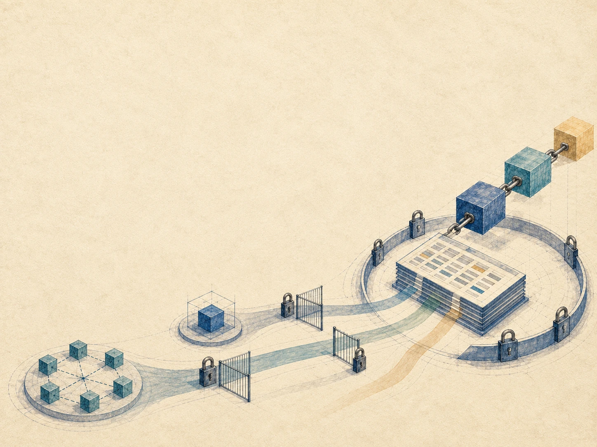

身份认证
核验身份绑定、有效期与撤销状态

写清四家机构的权限、签收与付款指令
 VER. 2608
Built with impress.js
VER. 2608
Built with impress.js
四家机构按约定权限提交事件，程序核验、更新状态并返回处理进度
教材按历史用途划分三个阶段，各类用途可并存，项目可按需选择
| 关注点 | 增加的能力 | 实施问题 |
|---|---|---|
| 数字货币记账 | 共同维护数字交易历史 | 开放参与、等待与资源消耗 |
| 智能合约 | 用程序表达可执行规则 | 代码错误、输入来源与升级 |
| 行业协作 | 连接多机构业务与旧系统 | 身份、权限、治理与接口对接 |
智能合约的实施包括签收信息供给、升级批准和旧系统回执查询
三种模式区分参与和控制方式；性能与安全须按具体实现评估
| 模式 | 准入与控制 | 配置内容 |
|---|---|---|
| 公有链 | 按公开规则参与，不由单一机构逐人许可 | 提交、验证资格、费用及隐私 |
| 联盟链 | 多个获授权机构共同治理 | 成员、角色与配置变更 |
| 私有链 | 由单组织控制写入与治理 | 读取范围、内部权限及审计 |
共识协议按故障模型选择；认证节点仍可能作恶，公开地址也可能关联身份
教学联盟：F 工厂、L 物流、S 门店、Q 质检，各运行一个验证节点
| 机构 | 共同物流记录 | 可提交的业务动作 |
|---|---|---|
| F | 可读 | 当前由 F 保管时申报转出 |
| L | 可读 | 承运与当前由 L 保管时申报转出 |
| S | 可读 | 对交给本门店的货物签收 |
| Q | 可读 | 提交质检报告，不代替 L 或 S 签收 |
外部访客默认不可读；报价和联系人存入另设权限的业务库，按授权开放
业务签名、区块共识和升级批准分别适用不同规则，本例保持四节点配置
| 动作 | 本例要求 |
|---|---|
| B001 签收 | L 与 S 针对同一事件字节分别签名 |
| 接受区块 | 按 18.1 的四节点 PBFT 规则取得合规证据 |
| 升级业务规则 | 四机构管理员至少 3 家批准同一版本与生效高度 |
| 新增第五个验证节点 | 按成员变更协议重设配置与阈值 |
管理员批准升级，节点按协议提交区块；L、S 各用自己的密钥签名
Q 的有效证书绑定质检身份，B001 的接收门店是 S
核验身份绑定、有效期与撤销状态
Q 提交质检报告；S 签署本门店收货
撤销旧凭证并登记新凭证，核查操作
凭证撤销后保留已提交历史，按对应历史配置核验
公钥基础设施 PKI 管理证书与信任关系，CA 签发证书并可靠绑定机构身份
九层按功能划分，同一程序或机器可承载多层功能
| 责任组 | 对应教材层次 | 功能输出 |
|---|---|---|
| 资源与节点基础 | 基础设施、基础组件 | 运行节点、传消息、存字节与验签 |
| 账本与共识 | 账本、共识 | 接受历史顺序，保存区块与证据 |
| 合约与接口 | 智能合约、接口 | 把请求转为可核验的状态变化 |
本页列出三组功能；验证、执行与排序的先后由平台协议规定
系统管理和操作运维服务节点运行，应用层向门店用户提供业务入口
| 责任组 | 对应教材层次 | 本例输出 |
|---|---|---|
| 身份与运维 | 系统管理、操作运维 | 证书、角色、节点配置、告警与恢复 |
| 业务应用 | 应用 | 门店签收页面、查询结果与异常提示 |
应用显示业务进度，运维排查节点落后；HTTP 成功响应后仍须核对业务结果
重置到 18.1 的高度 101：B001 为 L/版本 1；以下是规则 v2 的独立演示
| 输入或初态 | 取值 |
|---|---|
| 事件 E01 | B001 从 L 交给 S，预期版本 1，规则版本 v2 |
| 业务签名 | L 与 S 签同一事件；Q 的签名不能替代 |
| 付款关联 | 固定指令 ID P01，物流费 600 元，尚未处理 |
| 治理前提 | v2 已经批准并在本例处理前生效 |
E01 采用增加接收方签名的 v2 规则；18.1 的 T5 保持原单方申报规则
Event—Condition—Action 描述执行规则，输入真实性另核实
| 环节 | E01 的具体处理 |
|---|---|
| 事件 E | 接收 E01 的固定字段与 L、S 两份签名 |
| 条件 C | 凭证和角色有效；保管方 L、版本 1；事件未处理 |
| 动作 A | B001 变为 S/版本 2，记录签收并生成 P01 付款指令 |
状态更新、事件去重和 P01 写入随合约一起提交；付款指令待执行，到账状态由银行结果确认
重置到 L/版本 1，依次处理请求；各节点使用相同状态与规则版本
| 请求 | 本例返回 | 状态或指令 |
|---|---|---|
| E01 双签、版本 1 | 接受 | S/2，P01 待执行 |
| 原样重发 E01 | 返回原结果 | 仍 S/2，只有一个 P01 |
| E01 换金额为 900 | ID 与内容冲突 | 拒绝，不改原结果 |
| 新事件但仍预期版本 1 | 版本不匹配 | 拒绝，不再生成指令 |
金额取自固定事件字段，节点使用相同版本和运算规则；临时网页或各自时钟可能导致结果分歧
P01 已随账本提交，外部执行器才发起模拟银行请求
| 阶段 | 请求或返回 | 应用显示 |
|---|---|---|
| 发送 | 固定业务键 P01，金额 600 元 | 处理中 |
| 受理后响应丢失 | 调用方超时，结果未知 | 待核实 |
| 按 P01 查询 | 返回已完成，凭证 B900 | 记录回执后显示已完成 |
| 重试 P01 | 按接口约定查询或幂等重试 | 沿用 P01，避免重付 |
模拟银行独立处理，超时可能已付款；账本与银行非同一原子事务。缺少可靠查询或幂等接口时，须人工核对异常
假设 v2 把 600 误算成 900，多个节点一致执行也会一致出错
已付款项按业务规则更正或补偿；v3 生效后，按 v2 生成的新结果不再被接受
SDK 提供调用库，RPC 用于远程调用；请求须经过平台验证与提交流程
| 得到的返回 | 应理解为 |
|---|---|
| 请求已接收，交易 ID E01 | 入口收到请求，后续可能拒绝或等待 |
| E01 提交成功，高度 102 | 按平台定义的提交条件接受 |
| 状态库显示高度 101 | 查询投影尚未赶上，不应显示“未提交” |
| 连接断开或超时 | 结果未知，沿用 E01 查询或重试 |
业务页面区分提交与查询进度；BaaS 托管须约定密钥保管、权限、恢复和争议处理责任
独立简化模型：每轮每节点给其他节点各发一条，不含重试与打包
| 配置 | n(n−1)条/轮 | PBFT 模型阈值 |
|---|---|---|
| 4 节点，f=1 | 12 | 3 个不同验证者的合规证据 |
| 7 节点，f=2 | 42 | 5 个不同验证者的合规证据 |
公式仅计一轮发送，完整 PBFT 包含多阶段；性能与安全还取决于故障独立性、网络、实现及负载
独立容量模型：持续 30 秒到达 1200 笔/秒，处理能力 1000 笔/秒
| 量 | 计算或定义 |
|---|---|
| 新增积压 | (1200−1000)×30＝6000 笔 |
| 随后到达 800 笔/秒 | 每秒净消化 200 笔，需 30 秒清空 |
| 吞吐 | 单位时间成功提交的交易数 |
| 确认延迟 | 从提交请求到满足约定提交条件的时间 |
端到端可见延迟包含排队、验证、共识与查询同步；“去中心化、安全、效率”用于评估权衡
独立模型：100 笔/秒，每笔已编码记录 1 KB，按十进制计算
| 范围 | 仅记录字节 |
|---|---|
| 单份一天 | 100×1000×86400＝8.64 GB |
| 单份 30 天 | 259.2 GB |
| 四份 30 天副本 | 1036.8 GB，约 1.04 TB |
容量另计索引、区块头和日志；节点若仅保留近 30 天，较旧记录由归档保存，查询时核验完整性
独立例：A 链锁定货权 X，B 链接收证明后创建映射记录 Y
| 收到什么 | 本例处理 |
|---|---|
| A 链锁定证明 | 来源、可信根、最终性与锁定内容 |
| 重复提交同一证明 | 按来源链及事件 ID 去重，保留一个 Y |
| B 链处理失败或超时 | 先查结果，按协议恢复或解除锁定 |
| 仅一张“A 已成功”截图 | 不足以证明可核验的跨链状态 |
跨链原子性需专门协议；解除 A 锁定前须排除 B 稍后成功，避免双份货权
机构权限限定业务动作，合约提交状态与指令，应用核对外部结果
四家读账本，Q 质检、S 签收
九层按功能分五组，应用与运维分工
双签通过后 S/2，P01 只生成一次
撤销与升级、积压与归档、跨链恢复
下一节：按同一需求比较数据库、共同账本与融合方案